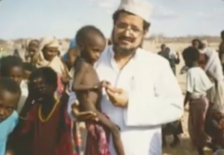
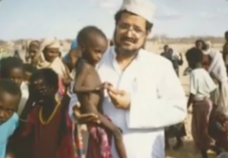
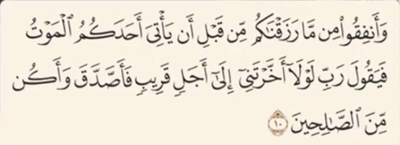

جواب
نه در قرآن و نه در متون دینی هیچ اشاره ای به این نشده که از کلمات و عبارت های قرآنی برای نوشتن پشت ماشین استفاده کنید
این یک موضوع شخصیه و هیچ ارتباطی به دین داری نداره
و دین داری نه با نوشتن یک آیه پشت ماشین سنجیده میشه نه با مقدار دارایی افراد
حاج حسین آقا ملک یکی از بزرگ ترین واقفان تاریخ معاصر ایرانه و از چهره های برجسته در امور خیریه و نیکوکاری بود
که تمام ثروتش رو وقف امور خیریه برای مردم نیازمند میکنه
دکتر عبدالرحمان السمیط پزشک ثروتمند کویتی
 

بیش از 29 سال از عمر خود رو صرف خدمت به نیازمندان در مناطق محروم آفریقا میکنه از جمله فعالیت های ارزشمند او می توان به حفر 9500 حلقه چاه آب در روستاها و مناطق خشک ، ساخت بیش از 204 مرکز بهداشتی و بیمارستان ، سرپرستی بیش از 15 هزار کودک یتیم، ساخت بیش از 840 مدرسه و تاسیس چهار دانشگاه در کشور های مختلف آفریقایی اشاره کرد
و خیلی از شخصیت های دیگه که اتفاقا همه این افراد ثروتمندان دیندار هستن
خدا تو قرآن میگه :
و از آنچه که به شما داده ایم انفاق کنید پیش از آنکه مرگ شما برسه
یعنی مال و ثروت فقط برای خوش گذرونی نیست
دین به ما یاد میده که باید از هر چیزی که داریم بخشش رو برای کمک به نیازمندان بذاریم
دین نه تنها باعث فقیر شدن انسان ها نمیشه بلکه به ثروت شون معنا و هدف میده
این همون چیزیه که باعث میشه دنیا به یک جای بهتر تبدیل بشه
نکات تکمیلی
- جمعبندی: دین و دینداری هیچ ارتباطی با میزان دارایی یا فقیر بودن ندارد. قرآن و متون دینی تأکید میکنند که اصل ایمان و عمل صالح مهم است، نه ظاهر یا ثروت.
- نمونههای واقعی: شخصیتهایی مثل حاج حسین آقا ملک و دکتر عبدالرحمان السمیط، ثروتمندان دینداری بودند که تمام دارایی و عمرشان را صرف کمک به دیگران کردند. دین به آنها هدف و معنا داده بود و باعث شده بود ثروتشان اثر واقعی و ماندگار داشته باشد.
- نکته علمی-اجتماعی: مطالعات روانشناسی و جامعهشناسی نشان میدهد افرادی که اصول دین را در زندگی عملی پیاده میکنند، حتی اگر ثروتمند باشند، تمایل بیشتری به کارهای خیر و مشارکت اجتماعی دارند و تأثیر مثبت بر جامعه میگذارند.
- تصحیح باور غلط: دیدن آیات قرآن روی ماشین یا لباس افراد، نشانه دینداری واقعی نیست. ایمان واقعی در عمل، اخلاق، بخشش و خدمت به دیگران ظاهر میشود.
- پیام اخلاقی: دین و ایمان به ما یاد میدهد که دارایی و امکانات را نه برای خود، بلکه برای خدمت به دیگران استفاده کنیم. این رفتار است که دنیای ما را به جای بهتری تبدیل میکند و واقعیت دینداری را نشان میدهد.